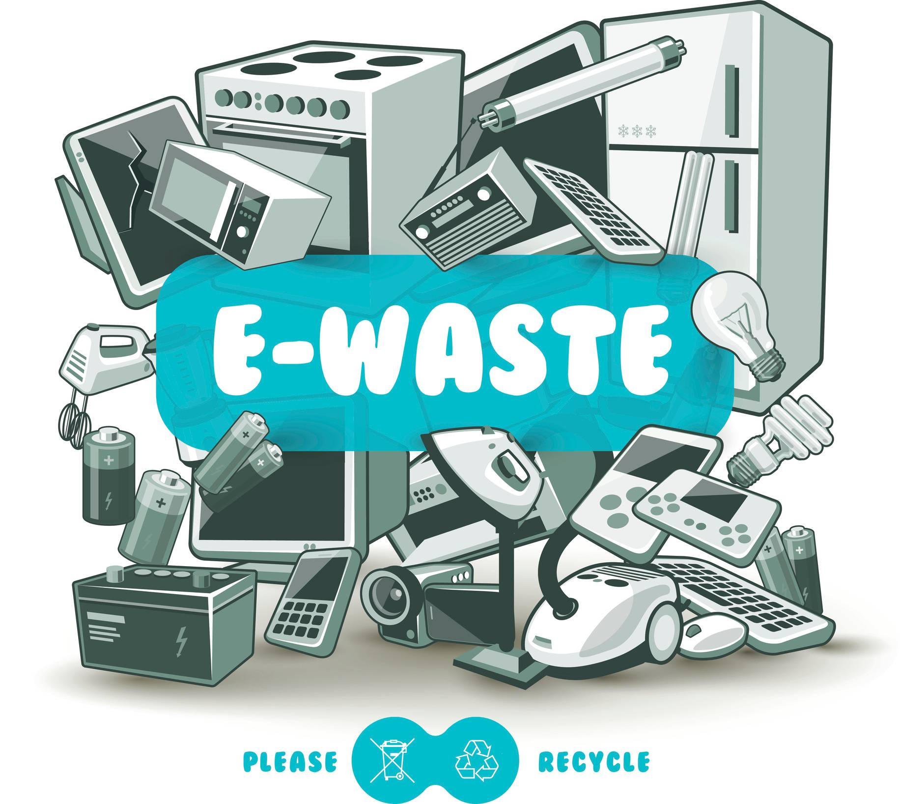

The standard definition of
E-waste is any
unwanted electronic equipment/product (EEE) that has been discarded
without intention of use and is nearing or at the end of their "useful life". These include working and broken
items that are thrown in the garbage or donated to a charityreseller like Goodwill. Often, if the item goes
unsold in the store, it will be thrown away.
E-waste is particularly dangerous due to
toxic
chemicals that naturally leach from the metals inside when
buried.
